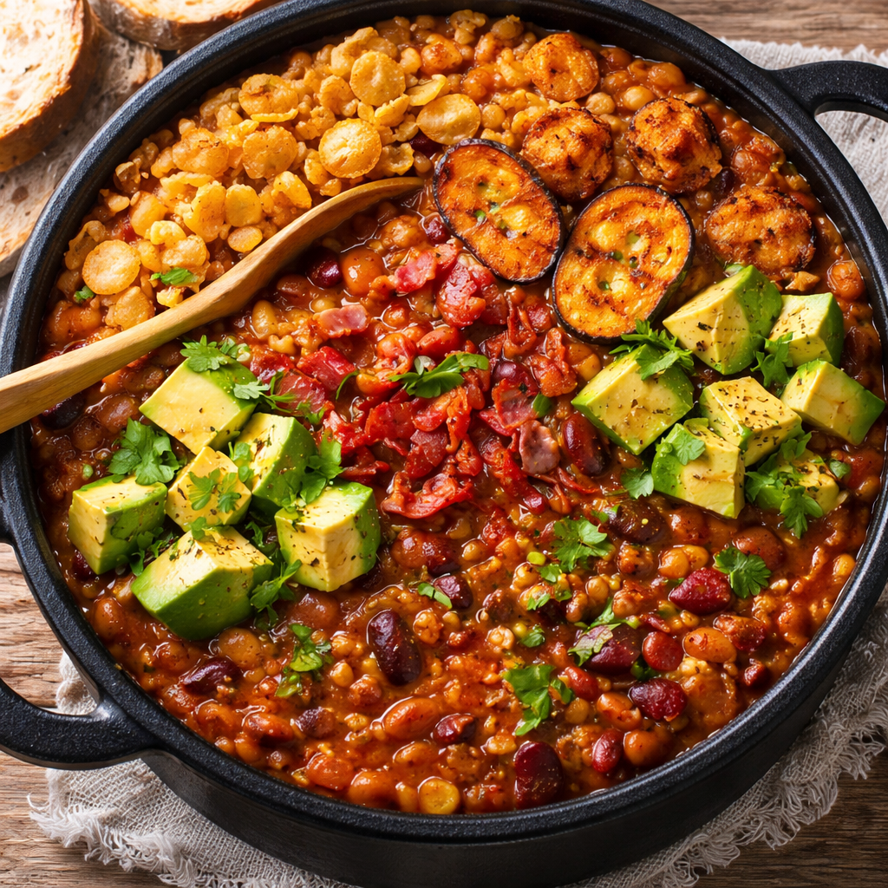

Colombian Frijolada

Description
A colombian "frijolada", is a mixture of red beans and other
ingredients such as: chorizo, ground meat, avocado, ripe platain, fried pork belly
among others all mix together in a paila or "totuma" to enjoy among with white rice.
Ingredients
- 500 g of red beans
- 1.5 L of water
- 600 g of pork belly
- 1 ripe platain
- 1 oil spoon (14g)
- 250 g of chopped tomato
- 1 chopped onion
- 1 mashed garlic tooth
- Salt and pepper
Steps
- Rinse the 500 g of red beans thoroughly under cold water. Soak them in
plenty of water for at least 8 hours or overnight to soften and reduce cooking time.
- Drain the soaked beans and place them in a large pot with 1.5 L of fresh
water. Bring to a boil over medium-high heat, then reduce to medium-low and simmer for about 60 minutes, partially covered, until they begin to soften.
- While the beans cook, cut the 600 g of pork belly into medium chunks.
In a separate pan over medium heat, cook the pork belly until lightly browned and it releases some of its fat (about 8–10 minutes). Do not overcook; it will finish cooking with the beans.
- Add the browned pork belly (with its rendered fat) to the pot of beans.
Continue simmering for another 30–40 minutes, stirring occasionally,
until the beans are tender and the pork is fully cooked.
- In the same pan used for the pork, add 1 tablespoon (14 g) of oil if needed.
Sauté the chopped onion for 3–4 minutes until translucent. Add the mashed garlic and cook for 1 minute more, stirring to avoid burning.
- Add the 250 g of chopped tomato to the onion and garlic mixture.
Cook for 5–7 minutes until it forms a thick, well-integrated sauce. Season lightly with salt and pepper.
- Incorporate this sautéed mixture into the pot of beans and pork.
Stir well and let everything simmer together for 15–20 minutes so the flavors fully combine and the broth thickens.
- Slice the ripe plantain into thick rounds. In a separate pan with a small
amount of oil, fry the slices over medium heat until golden brown on both sides (about 2–3 minutes per side). Set aside.
- Taste the beans and adjust with salt and pepper as needed.
The final consistency should be thick and hearty.
- Serve hot in deep bowls, topping each portion with the fried plantain slices.
Home